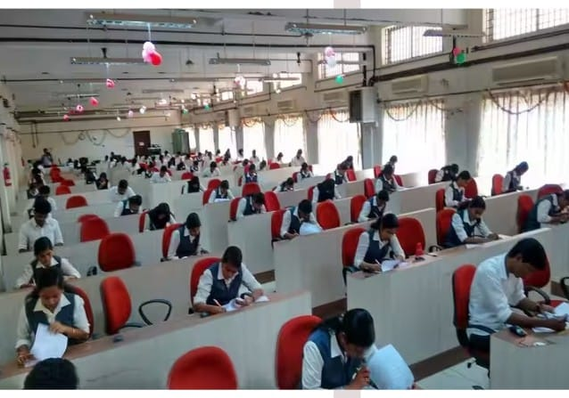
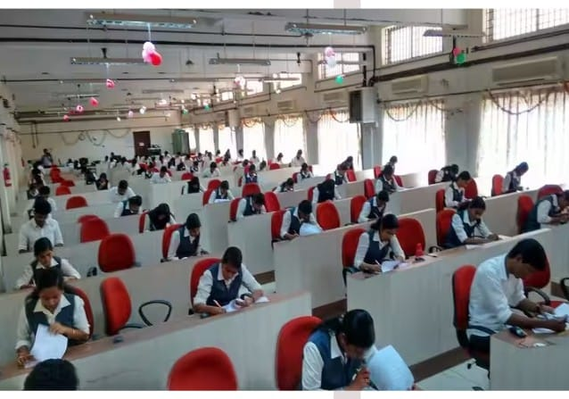
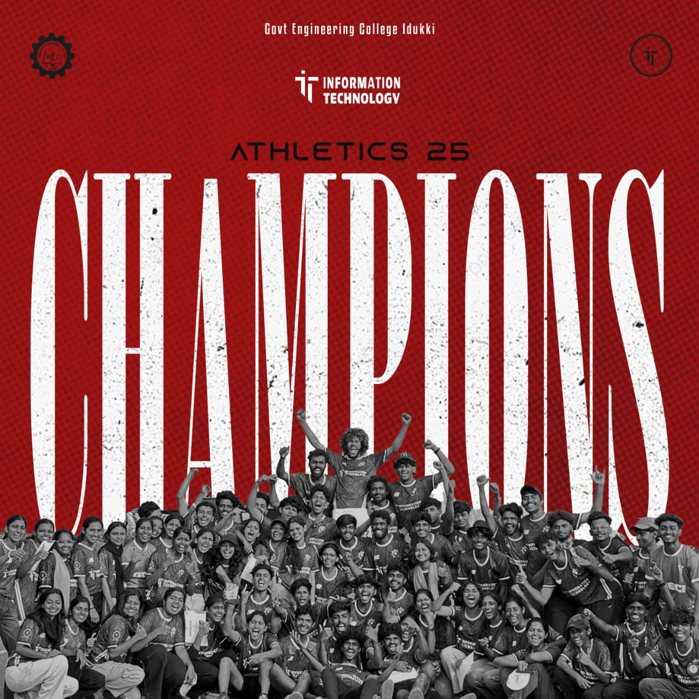
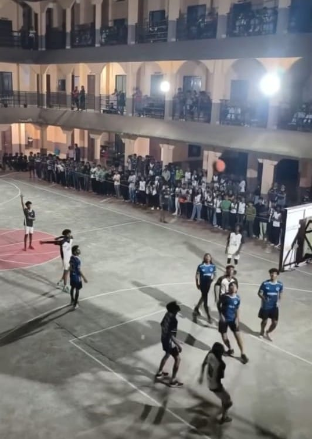
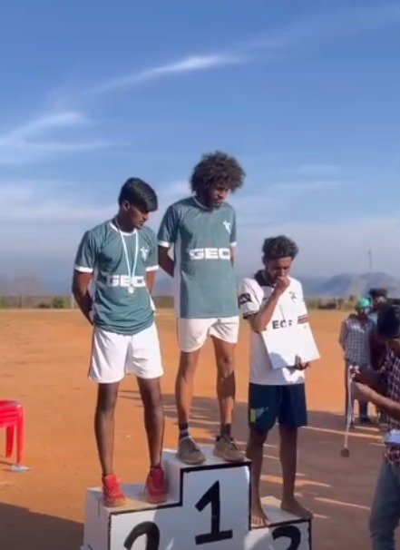
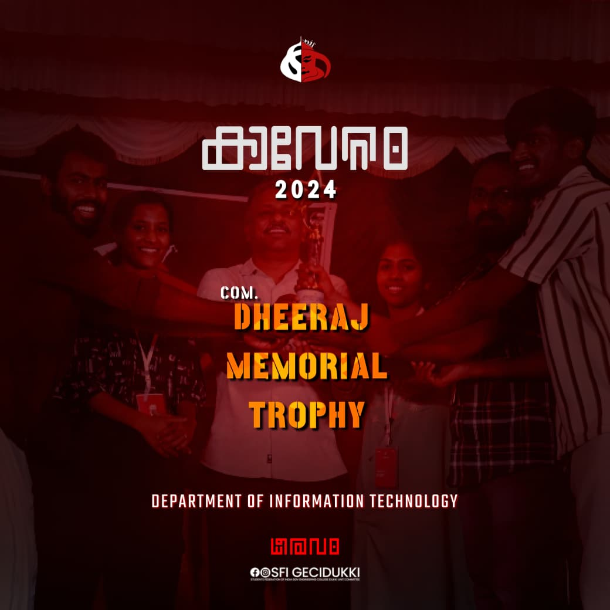
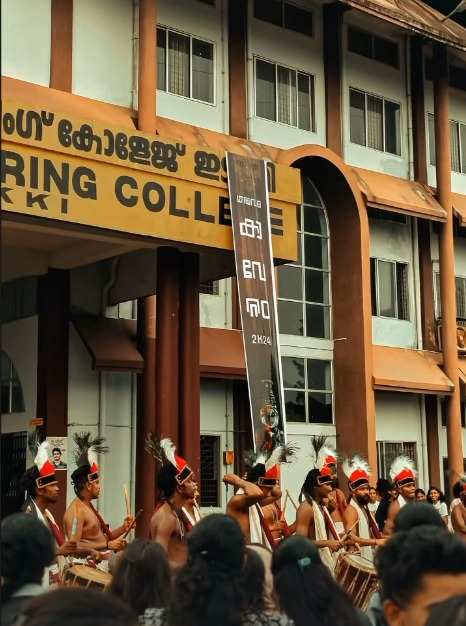
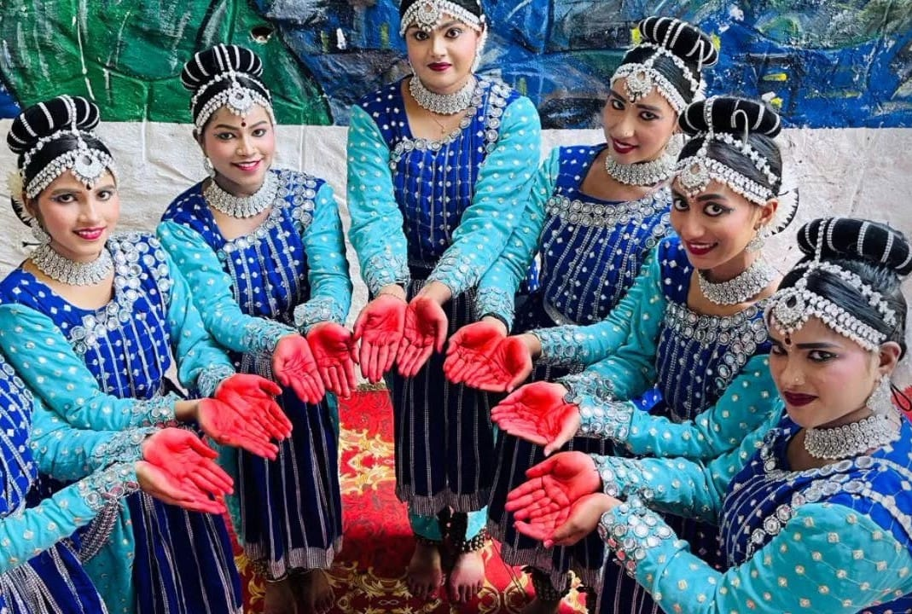

Clubs & Associations
Our department has its own association, IT Association, which is very much active towards providing a good and better output for the welfare and growth of the department. The association provides a lot of activities encouraging the students to participate more.The clubs that are active include the Tinkerhub club that helps improve the ability to overcome the failures that one student faces in life. We have many more clubs like NSS which is a national service society which builds the inner quality of a student. Many more clubs are active in our department.

Workshops & Seminars
The department provides a lot of workshops and seminars that are very much needed in building the future of a student. The FUTURO project exhibition held in the department of information technology under the IT Association was grand evening that helps students to understand how to build a good project.
 

Sports
Our department is very active towards sports and related activities. Our department has won the title for winning the athletic trophy this year and even for the last year. Our department is equipped to build ease out the player in each student.
  Arts
Our department also has a good grip on our Arts. Our department won the trophy for the top department last year. Our department also provides many other activities that can help a student to understand his or her skills and to work on it.
  